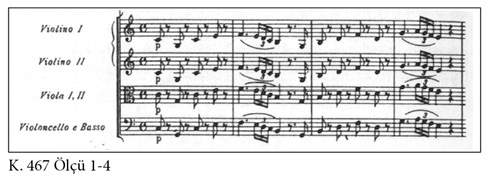
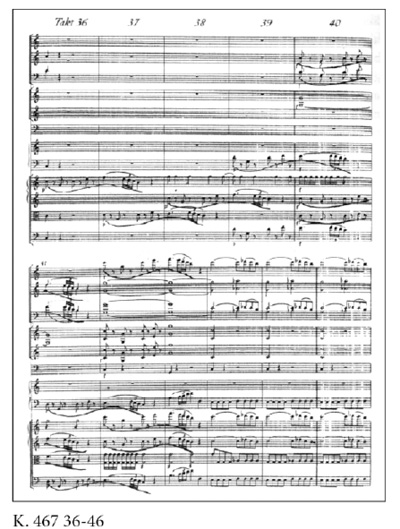
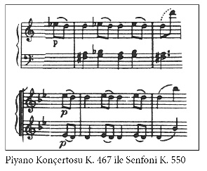
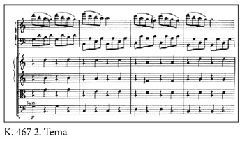

Solo Konçertoları
Solo konçerto dendiği zaman insanların aklına çoğu zaman bir kişinin tek başına enstrüman çaldığı –örneğin piyano– etkinlikler gelir. Bu işle ilgilenenler ise piyano gecelerinden, piyano matinelerinden ya da piyano resitalinden bahsederler. Solo konçerto terimi, özel bir müzik parçasını ifade etmek için kullanılır. Solo konçertolarda tek enstrüman kullanılmaz. Bir orkestra tarafından icra edilir. Orkestranın büyüklüğü değişebilir. Mozart’tan önce Bach döneminde orkestrada sadece yaylılar vardı; Mozart’tan sonra, yani Beethoven’da ve daha ziyade Brahms’ta orkestra elli kişiden yetmiş kişiye kadar çıkmıştır, pikolo flütten kontrbasa kadar büyük bir senfoni orkestrası olmuştur. Orkestraya biçilen rol farklı farklıdır. Piyano, kiminde solistten önce giriş bölümünü çalar, kimi zaman motifi belirler, ardından solo enstrüman ona karşılık verir ya da tam tersi olur. Sonra akorlarla yine solistin usta icrasına eşlik eder – görev paylaşımı kesin kurallara bağlı değildir. Besteci nasıl istiyorsa öyledir. Solo konserler genelde üç bölümden oluşur. Bu üç bölüm temel hızlarıyla birbirinden ayrılır. İlk bölüm hızlı, ikinci bölüm yavaş, üçüncü bölüm hızlı sıralaması kural olarak kabul edilir.
Her solo konserin ilk bölümünün sonunda bir kadans yer alır. Bu kısımda solist, teknik ve müzikal anlamda becerilerini sergiler. Orkestra susar, solist tek başına çalar. İcracı genellikle bölümün motifiyle başlar ve enstrümanıyla ana temaların ve tekniklerin ne kadar muhteşem bir biçimde ortaya konabileceğini kanıtlar. Dinleyiciler bundan çok etkilenir. Bu sayede –sadece Mozart’ın yaşadığı dönemde değil– günün birinde onun kadar iyi çalmak isteyen öğrencilerin ortaya çıkmasını sağlar.
Mozart konserini fon müziği olarak dinleyenler, onun neşeli bir iç dünyası olduğunu düşünebilirler. “Güzellik” yeterli gibi görünür. Onun ana temalarını yaşayarak anlamak isteyenler ise tüm dikkatini vermelidir. Küçücük bir kesite bir sürü müzikal ana tema sığdırılmıştır. Vereceğimiz konser örneğinin, ki yarım saat gibi kısa bir süresi vardır, ilk bölümünü mercek altına alacağız ve birkaç örneğe yakından bakacağız. Ayrıca, her bölümde ana temayı gösteren sayısız örnek vardır, onu eşsiz kılan da zaten budur. O, hepsini bir araya getirerek unutulmaz bir işitsel zevk oluşturmayı başarmıştır.
Mozart, piyano ve orkestra için toplam yirmi bir piyano konçertosu bestelemiştir. Bunlardan sekizini, Şubat 1784-Mart 1785 yılları arasında, yani on üç ay içinde bestelemiştir. Biz örnek olarak Mart 1785 tarihli piyano konçertosunu ele alacağız:
Eserin tam adı: Do Majör Piyano (ve Orkestra) Konçertosu, K. 467 (1785): İlk bölümün ilk üç buçuk dakikasını dinlediğimizde kulağımıza Mozart’ın tam dört muhteşem ana teması takılır.
1. Idee Fixe: Ana tema. Mozart son derece saf bir orkestra-piyano ile başlar; ritmiktir, sıkı biçimde planlanmıştır, sanki dört dörtlük ölçüde hareketli bir marş hissi uyandırır. On ölçü sonra müzik (sadece yirmi beş saniye) coşkulu bir hal alır. Baslar temayı üstlenir, hemen ardından öne çıkan enstrümanlar melodiye katılır. O ana kadar piyanonun sesi duyulmaz. Piyanist sessizce orkestranın açılış müziğinin bitmesini bekler. Yetmiş üç ölçü sonra nihayet piyanonun sesi duyulur, başta çekinik on altılık figürler çalar, sonra piyanist depar atar, kırk yedi sesle iki oktav tiz re7’ye (tam bir heyecan müziği) çıkar, ansızın susar, ara. Herkes solistin ana temayı yakalayacağı anın geldiğini sanır. Ancak yanılırlar. Solist dört ölçü boyunca aynı tonda mızmızlanır ve temanın birinci bölümünü orkestraya bırakır. İkinci bölümde nihayet piyano yalnız kalır. Bu arada iki buçuk dakika geçmiştir (84. ölçü).

2. Idee Fixe: Usta bir piyanist olan Mozart, bir melodiyi ne kadar özgün bir biçimde ortaya koyabileceğini göstermiştir –burada şu ilkeyi benimser: “Eski ustaların polifonik besteciliğine ben de hâkimim!” Sekiz ölçü boyunca tema aracılığıyla sanatını konuşturur, temayı sanki trafikte birbirini yakın takip eden altı farklı enstrüman grubunda ilerletir. Boğazı geçtikten sonra farklı bir biçimde ilerler.

3. Idee Fixe: İlk bölümde başladıktan tam üç dakika sonra Mozart’ın zihninde enstantene olarak eklenen bir melodi belirmiştir. Bu uzmanlar için bir bilmecedir. On iki ölçü gibi kısa bir süre piyano epizodu solo olarak icra eder. Sonra yaylılar hafif hafif ona eşlik etmeye başlar ve piyano kromatik ve ustaca sekanslarla, sanki piyanist yolunu şaşırmış gibi, devam eder ve sonunda bastığı son sesle birlikte ikinci temaya geçer.
Piyano konserlerinde her zaman bir yan tema olarak kabul edilen şeyi Mozart ünlü Sol Minör Senfoni, K. 550’sinde ana tema haline getirmiştir. Burada uyum, işleniş biçimi, ritim ve armoni ayırt edilemeyen ikizler gibidir.

4. Idee Fixe: İlk üç dakikalık çalkantının ardından Mozart ikinci ana temaya geçer. Bu, armonik, legato ve hafif sol minör tonda ilerleyen bir temadır. Yaylı orkestrası yavaşça eşlik eder, piyano solo ana temayı çalar. Öyle basittir ki, tam “berrak bir Mozart” klasiğidir, insan bir kez dinledikten sonra en geç üflemeliler yeniden girdiğinde melodiye eşlik edebilecek hale gelir. Peki ya sonra ne olur? Mozart bu olağanüstü melodiyi yavaşça bir kenara bırakır ve yeni bir temaya yönelir. İtiraf etmek gerekir ki, Mozart daha sonra kısa bir an yine sol majör melodiyi hatırlar, melodiyi do majörde çalar ama sonra bundan vazgeçer. Bu, küçük alandaki ana tema zenginliğinin en güzel örneklerinden biridir.

Mozart elli dört solo konçerto bestelemiştir, piyano işin içinde olduğu için iki ya da üç piyano ve orkestra için bestelediği eserler ve rondoları da bu gruba dahil edilir. Diğer solo enstrümanlar için de aynı şey söz konusudur. Örneğin keman, iki keman, piyano ve keman, klarnet, korno gibi.
Şipşakçılara yardımcı olmak için burada dünyaca ünlü olan birkaç solo konçertoya yer vereceğiz. Çoğuna göre La Majör (Orkestra) Keman Konçertosu, K. 219 yeryüzündeki en güzel keman konçertosudur. Üçüncü bölümün (rondo) üç dörtlük melodisini bir kez dinleseniz bile şüphesiz kulağınızdan silinmeyecektir.
La Majör Klarnet (ve Orkestra) Konçertosu, K. 622’nin temaları birbirinden güzeldir. Mozart bu konçertoyu 1791 yılında ölmeden iki ay önce klarnetçi arkadaşı Anton Stadler için bestelemiştir. Stadler, Mozart’ın talimatlarına uyabilmek için enstrümanını uzattırmıştır.
Re Majör Flüt (ve Orkestra) Konçertosu, K. 314, bundan önce adı geçen iki konçertoyla boy ölçüşemez. Bunun nedeni, Mozart’ın flütten pek hoşlanmamasıdır. Bu nedenle bu konçerto çoğu zaman bir obua ile icra edilir. Üçüncü bölümünü (rondo) 1777’de bestelerken Mozart’ın kafasından daha sonra besteleyeceği operaların melodileri geçmektedir, Saraydan Kız Kaçırma’da (1782) Blondchen’in seslendirdiği “Welche Wonne, welche Lust” aryasının melodisi kulağımıza takılır.
Daha fazla solo konçerto önerisi için bestecinin toplu eserlerinin yer aldığı listeye göz atabilirsiniz.